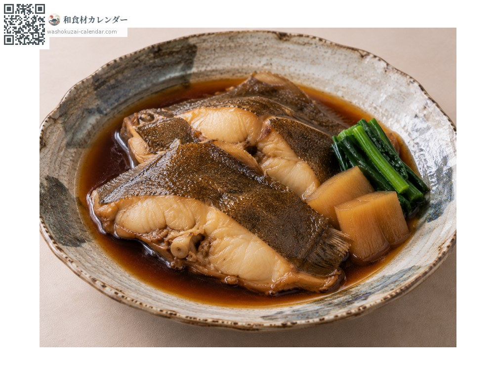
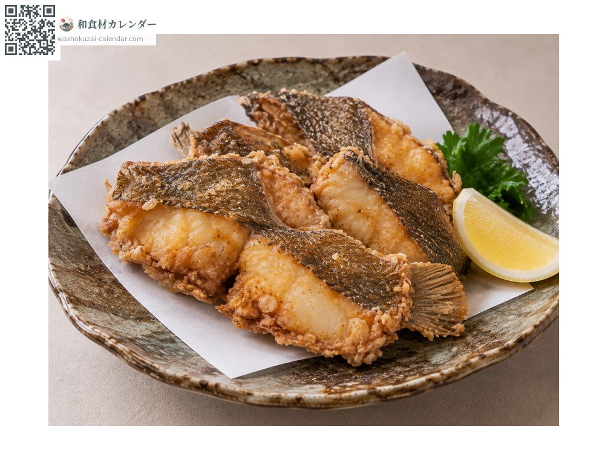
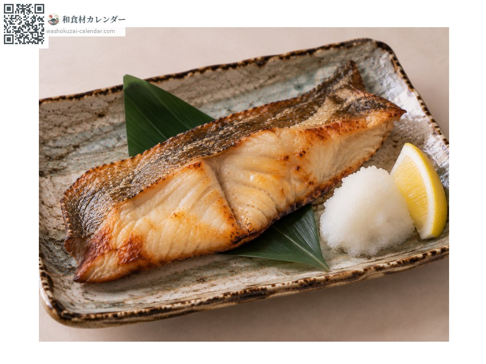

Roughscale sole
サメガレイ さめがれい
At its best in Jan, Feb, Nov, Dec

When it is at its best
In seasonAvailable
How to cook

Nitsuke (simmered in sweet soy)
The classic. Steaks simmered in sweet soy; the gelatinous skin turns meltingly soft.

Karaage (deep-fried)
Steaks deep-fried, which brings out the texture of the skin. Frying twice makes it more fragrant.

Dried overnight
Filleted and dried overnight, which concentrates the flavour.
How to choose
Steaks should be thick with well-formed tubercles on the skin. The flesh should look translucent with clean, unbroken edges.
Storage
Pat steaks dry, wrap and refrigerate. Use within two days. They also freeze well.
Main areas
Good to know
Hard, rough tubercles on the surface look like shark skin, which is where the name comes from. At 40 to 60 centimetres it is a large flatfish, and is mostly sold as steaks. A thick gelatinous layer under the skin gives simmered dishes a distinctive silkiness.
At their best around the same time
 Chub mackerel
Chub mackerel Japanese amberjack
Japanese amberjack Pacific bluefin tuna
Pacific bluefin tuna Swordfish and marlin
Swordfish and marlin Yellowback seabream
Yellowback seabream Golden threadfin bream
Golden threadfin bream Spottedtail morwong
Spottedtail morwong Largescale blackfish
Largescale blackfish